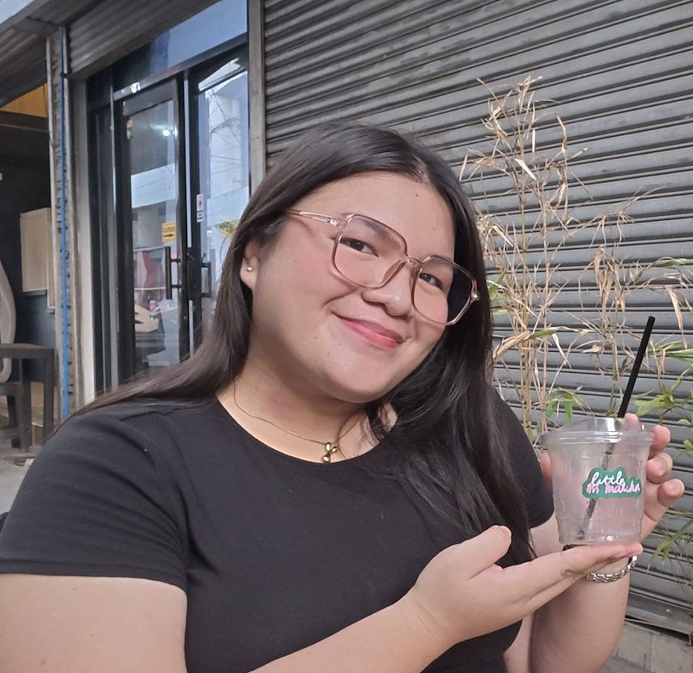
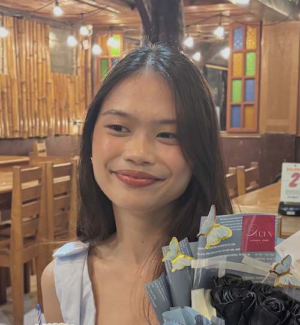

A few words from people who have been part of my journey.

Friend
Mikyll is one of the most genuine and caring people I know. She is someone who listens without judgment and makes people feel comfortable whenever they need someone to talk to. I have seen how she handles different situations with patience and understanding, and I admire how she continues to care for the people around her even when things are not always easy for her. She may sometimes doubt herself, but she is stronger and more capable than she realizes. I am grateful to have known her and to have shared many memories and experiences with her.

Roommate
Mikyll is a hardworking and determined person who always tries her best in everything she does. Throughout the years, I have watched her grow not only as a student but also as a person. Her journey in nursing has not always been easy, but she continues to face challenges, learn from her experiences, and keep moving forward. What I appreciate most about her is her willingness to learn and improve while still remaining kind and thoughtful toward others. I believe that her compassion, patience, and dedication will help her become a wonderful nurse in the future.
The people we meet become part of the story we create.